Fjällräven
Lug the things that matter
A student project from Explore Sustainability 2025 at Berghs SOC. We helped Fjällräven take social responsibility in a place it normally wouldn't: civil defence and emergency preparedness for young people living alone.
- Deliverables
- Research & Insights, Product Graphics, Campaign Design, Case Film & Pitch
- Duration
- 3 Weeks
- Team
- Team of 8
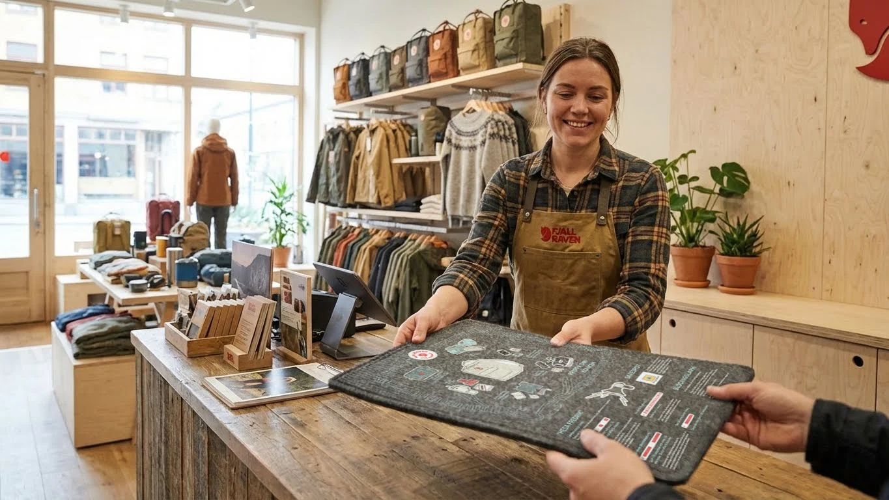
Case film

The challenge
Many young students living alone are not prepared for a crisis.
Our research revealed a gap between the importance of emergency preparedness and how students prioritise it in everyday life.
seven-day recommendation *
find MSB’s information *
the basic preparedness *
Research
& insight
Through interviews, surveys and desk research, we found that students often see emergency preparedness as important but too distant from their everyday lives to act on.
Key insight: When information doesn’t feel relevant, it’s easily ignored or forgotten.
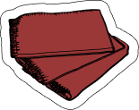
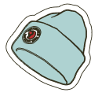
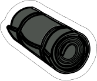
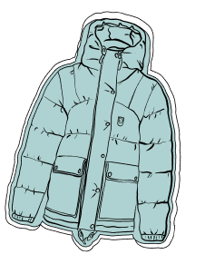
The concept
We developed a concept that integrates crisis preparedness information into Fjällräven products, including the Kånken seat pad, jacket lining and glow-in-the-dark stickers.
By placing essential information in familiar products, the concept makes preparedness more accessible and harder to overlook.
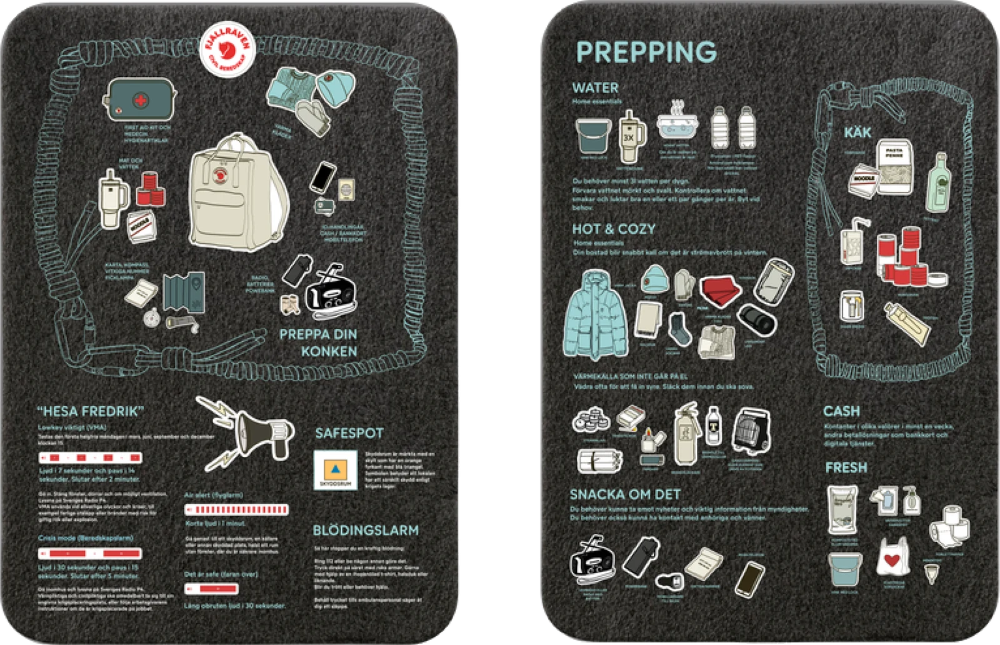
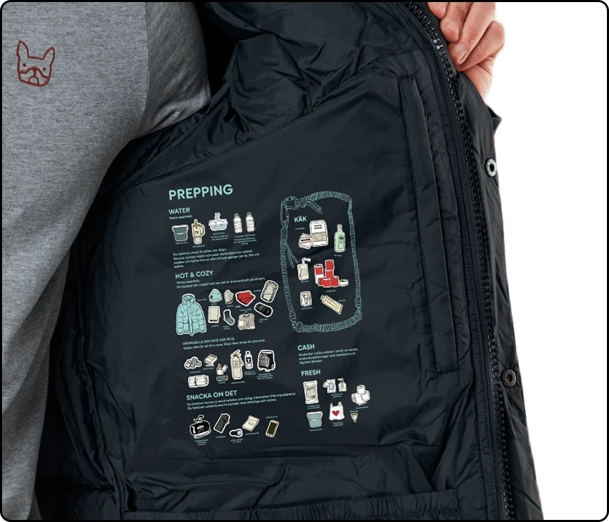
The campaign
To reach younger audiences, we created a campaign concept using humour, irony and familiar language across social media and out-of-home advertising.
“You carry the things that matter.
Don’t throw the important stuff away.”
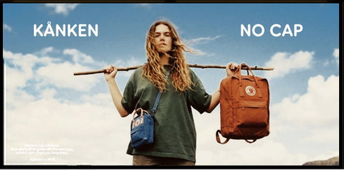
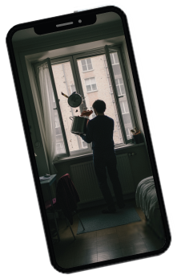
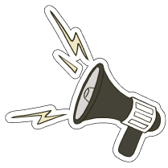
My role
As part of an eight-person team, I contributed to:
- Research and user interviews
- Moodboards and visual direction
- Product graphics, illustrations and copy
- Scriptwriting and case film production
- Presenting the concept on stage
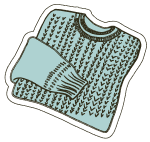
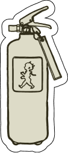
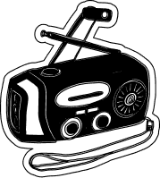
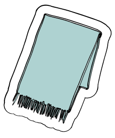
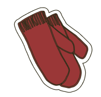
Key learning
This project showed me how research can challenge assumptions and how a simple, well-communicated idea can connect a brand with an important societal issue.